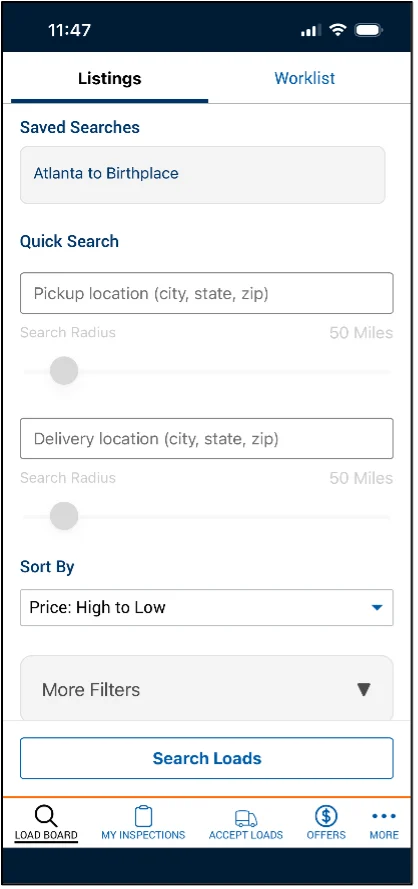
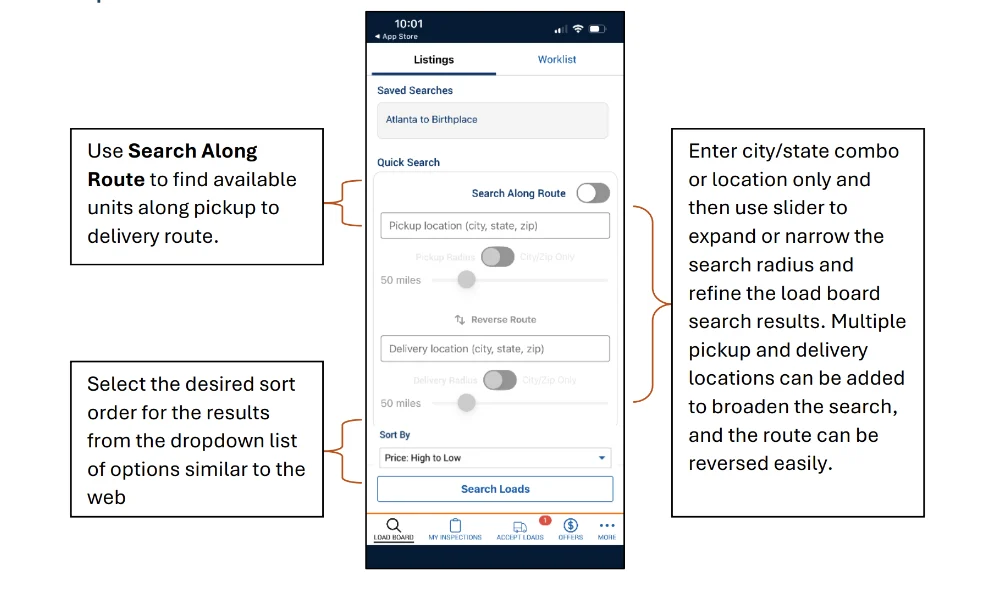
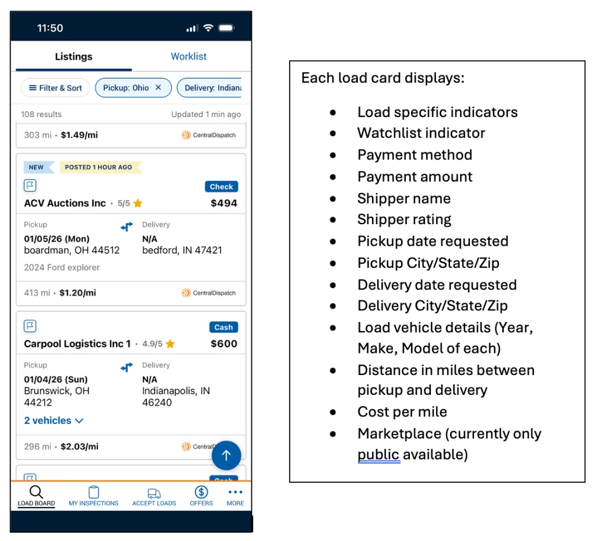

Central Dispatch
Finding and comparing vehicle loads on a phone
I helped launch mobile load search for vehicle carriers as part of the Shipment Solutions team.
See my contribution- Contribution
- Mobile search launch
- Team
- Shipment Solutions
- Company
- Cox Automotive
- Scope
- Public launch overview
My contribution
I partnered with UX Research, Product, and Software Engineering on the mobile search launch. The screenshots below come from the public product guide.
Read the launch announcement (opens in a new tab)Finding loads away from a desktop
Vehicle carriers use the load board to find cars to transport. Bringing search into the mobile app lets them look for loads on a route, compare listings, and save options to a Worklist.
From a route to a shortlist
Follow a load search from pickup and delivery locations to a listing a carrier can save.


Set a pickup and delivery
Carriers can start with a saved search or enter pickup and delivery locations in Quick Search.


Search along the route
The Search Along Route toggle includes vehicles along the way. The radius controls expand or narrow the area around each stop.


Compare available loads
Compare the pickup, delivery, payment, and shipper rating. Add a load to the Worklist from results or from its detail page.
Screens from the Central Dispatch mobile app guide
What shipped
Search launched in the carrier app. Carriers can find and review loads on mobile, then pick up where they left off with a Worklist that syncs with the web.
Product documentation
- Carrier mobile search guide (opens in a new tab)
- Launch announcement (opens in a new tab)
- Professional profile (opens in a new tab)
Product imagery belongs to Central Dispatch / Cox Automotive. The product guide documents the released screens and workflow.